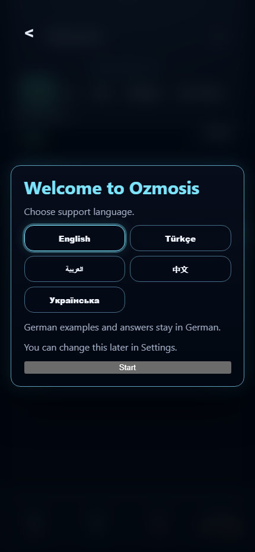
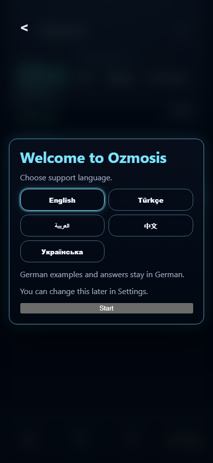
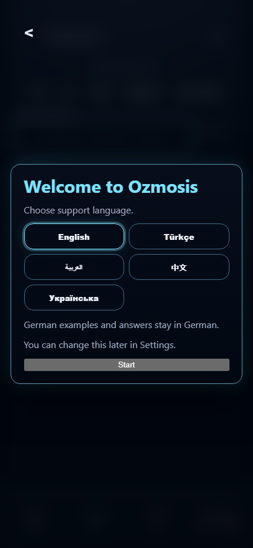
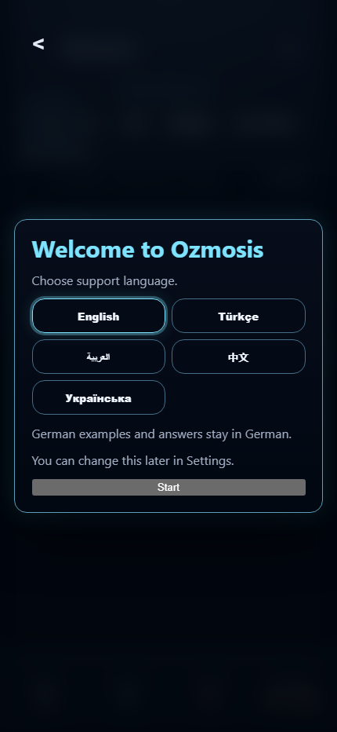
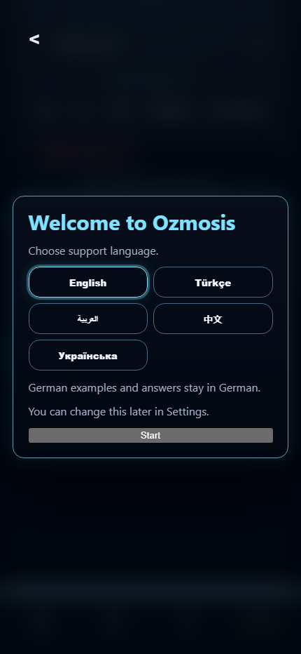
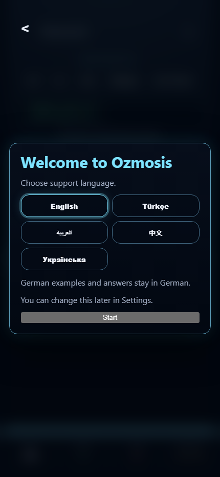
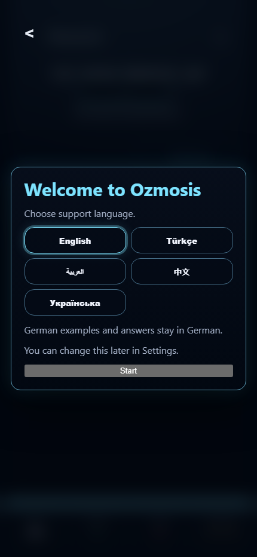
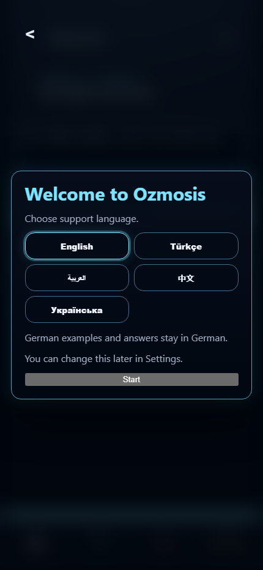
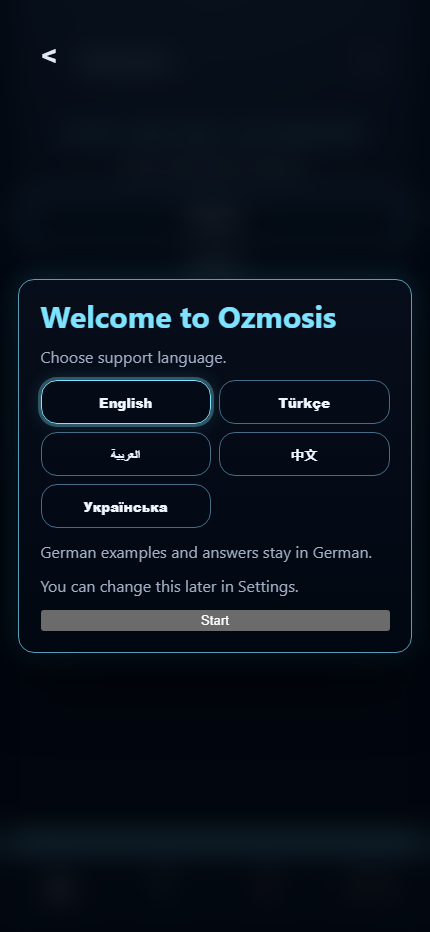

Ozmosis v0.85.5a Satzbau build-line / answer-leak proof
 satzbau-default-no-answer-leak
satzbau-default-no-answer-leak

satzbau-after-one-token-tap-build-line

satzbau-after-multiple-token-taps-build-line

satzbau-clear-reset
satzbau-manual-fallback-closed

satzbau-manual-fallback-open

satzbau-fail-post-answer

satzbau-success-post-answer

cloze-non-regression

correction-non-regression
 choice-non-regression
choice-non-regression

runtime-display-contract-non-regression